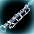

| Rank9-EX |
| Rank9-EX クラリネット |
 |
<基本情報>
Rank9 エキストラアイテム
魔力充電量 100％ [効率 100％]
攻撃力 15~15(1.20秒)
射程距離 300
35％のペット経験値ボーナス
召喚獣のすべてのステータスが45増加
集中力 +30％ |
<要求能力値>
レベル 50
知恵 45 |
<着用可能な職業>
ビーストテイマー
サマナー
ネクロマンサー |
<DropLv/係数>
3000/1000 |
<価格>
84万G |
<耐久力減少>
30型 |
<説明>
特殊な魔力が込められたクラリネット。魔力が充電されている間は相当な威力を発揮する。しかし、充電量が減るにつれて段々と魔力が半減していき、-50%になると普通のクラリネットと同じになる |
| Rank9-EX ベースクラリネット |
|  |
<基本情報>
Rank9 エキストラアイテム
魔力充電量 100％ [効率 100％]
攻撃力 21~21(1.20秒)
射程距離 400
45％のペット経験値ボーナス
召喚獣のすべてのステータスが75増加
集中力 +30％ |
<要求能力値>
レベル 75
知恵 60 |
<着用可能な職業>
ビーストテイマー
サマナー
ネクロマンサー |
<DropLv/係数>
3000/1000 |
<価格>
105万G |
<耐久力減少>
30型 |
<説明>
特殊な魔力が込められたベースクラリネット。魔力が充電されている間は相当な威力を発揮する。しかし、充電量が減るにつれて段々と魔力が半減していき、-50%になると普通のベースクラリネットと同じになる |